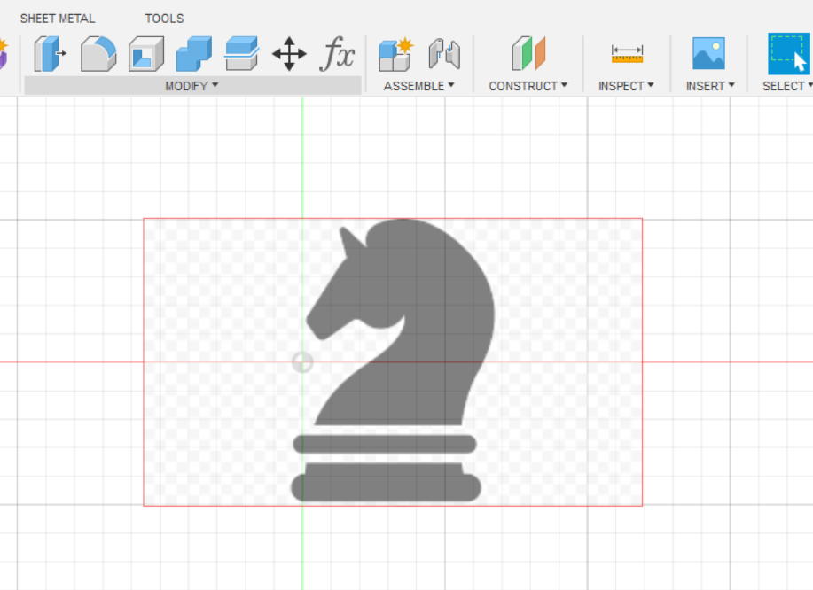

3D Printing
3D printing is the process of turning a three-dimensional digital model into a physical object by placing layers of thin materials. 3D printing is also known as addictive manufacturing. 3D printing saves time and is capable of turning anything from a digital model to a physical object.
Knight Chess Model
Firstly, I started looking up for knight chess images on the internet

With the suitable image of the chess piece, I imported the image into the software, Autodesk Fusion 360 through canvas. Then I edited the size accordingly.
Then, I traced the 2D image of the chess piece to get the outline of the model. As shown in the image below, I outlined the full area of the knight chess piece. We were taught by Mr Chew to only outlined one side of the chess piece for the lower part of the model as we will be using the revolve function which will only need one side of the sketch line as shown in the imsage below.

After that, I extruded the upper part of the chess piece and revolve the lower part of the chess piece